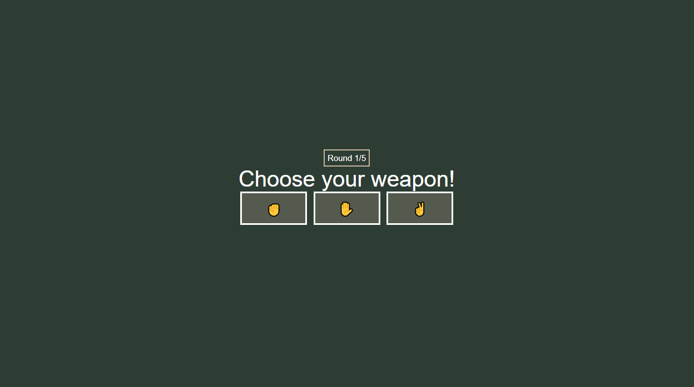
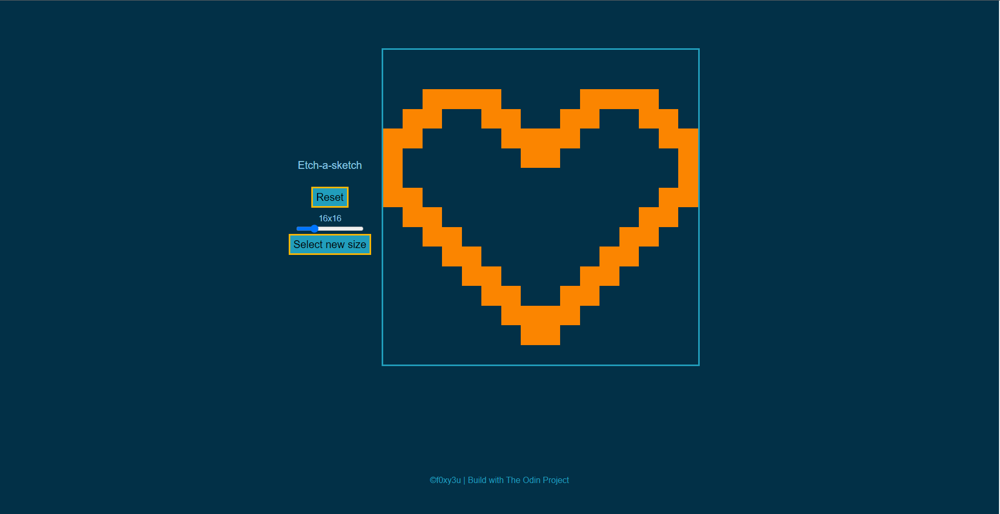
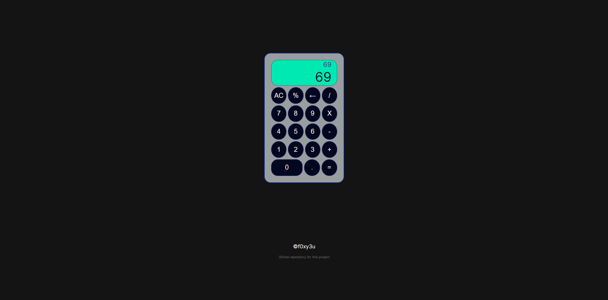
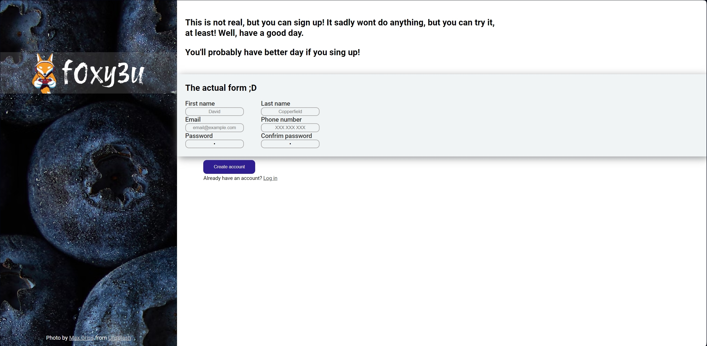
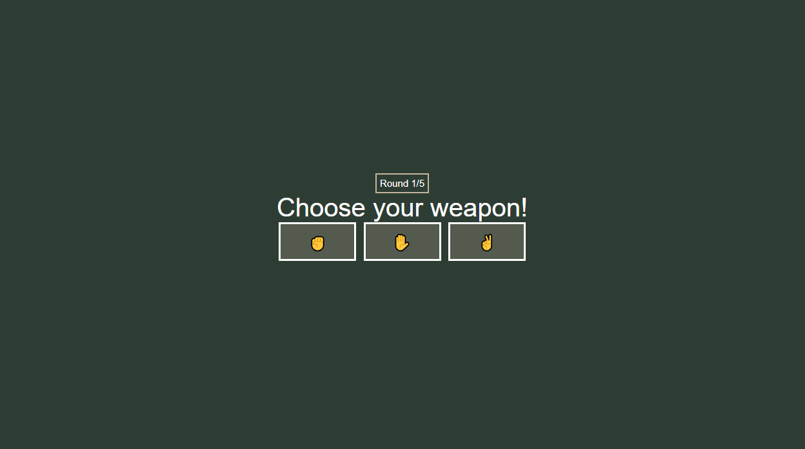
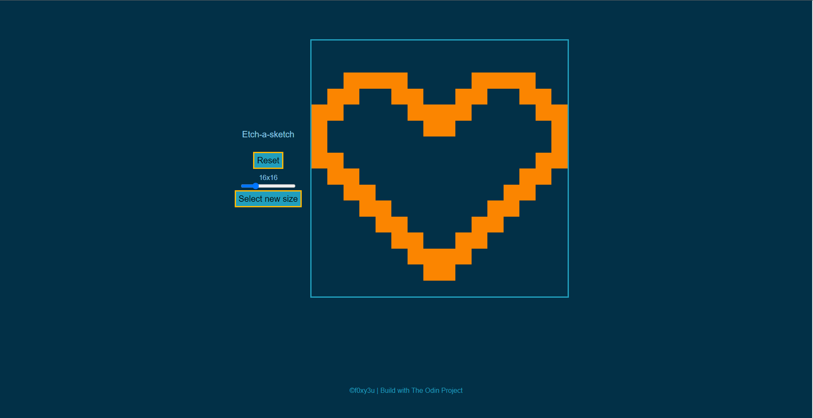
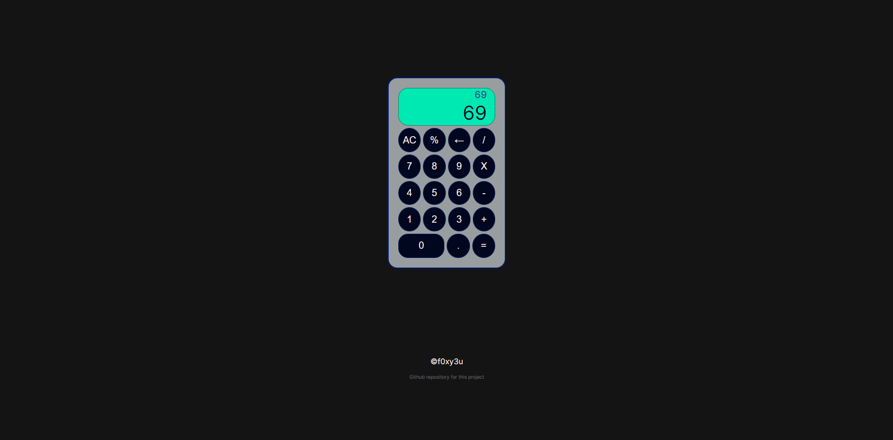
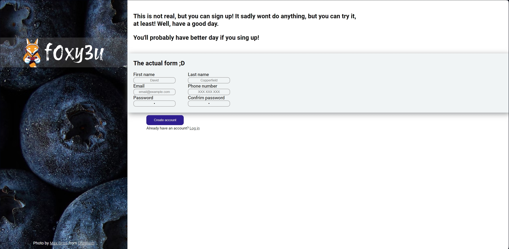

Welcome on my website.
My name is Vláďa. I am from the Czech Republic. I am learning web development from The Odin Project because of my school. Right now I mostly play new game named Palia and for I play basketball pretty often.
 f0xy3u
f0xy3u
Welcome on my website.
My name is Vláďa. I am from the Czech Republic. I am learning web development from The Odin Project because of my school. Right now I mostly play new game named Palia and for I play basketball pretty often.

My hobbys


All of my work:
click on photo to open info about website


 






